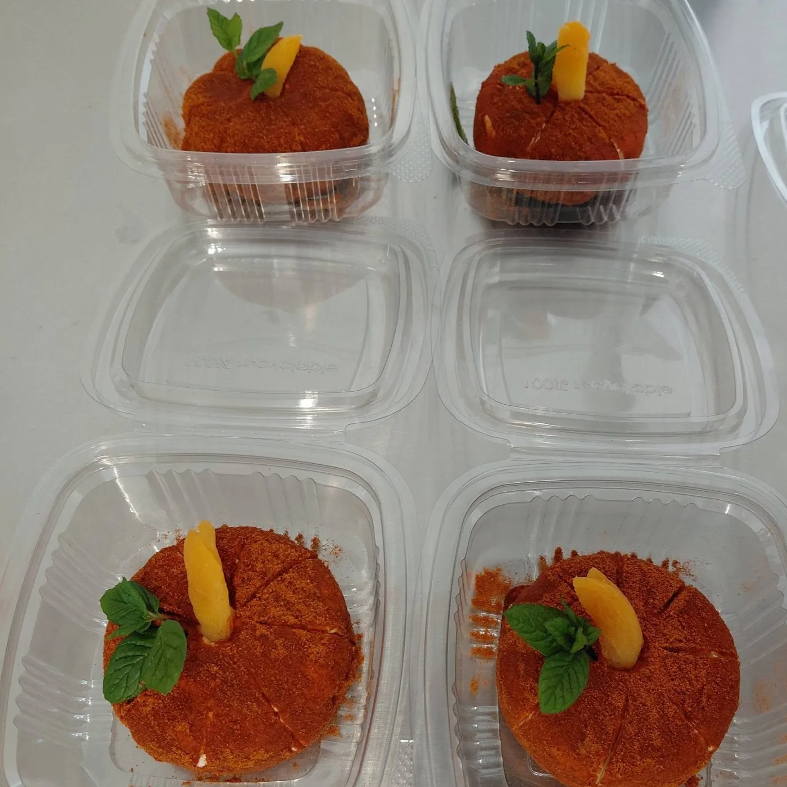
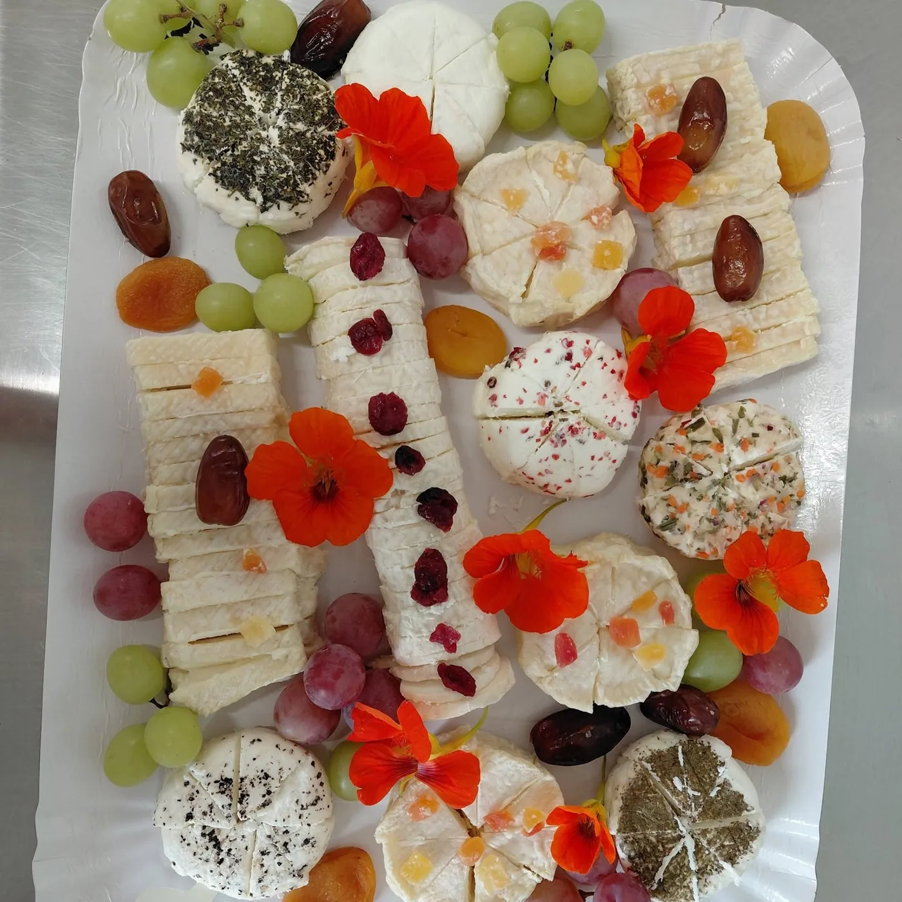
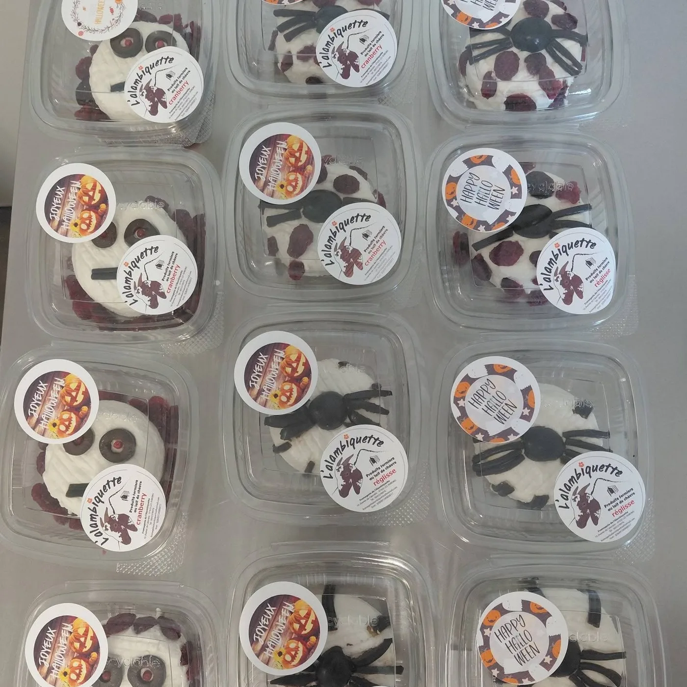
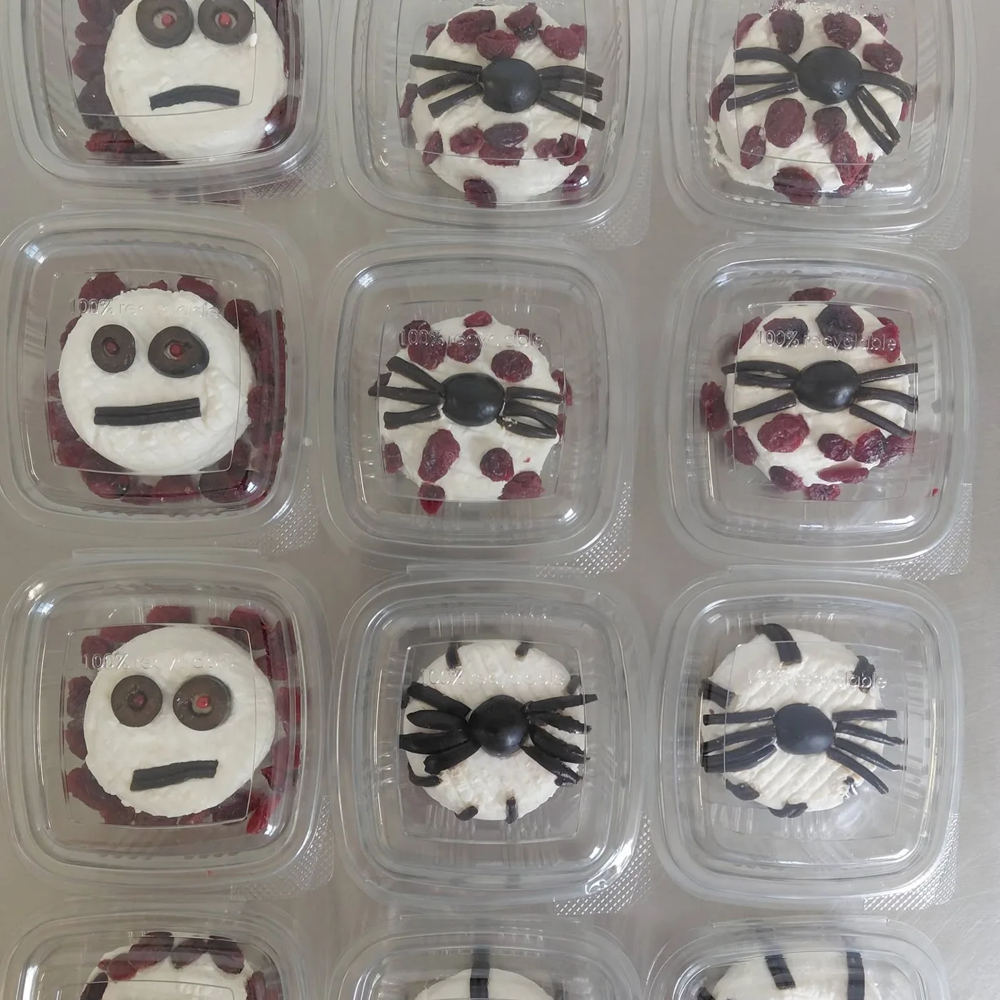
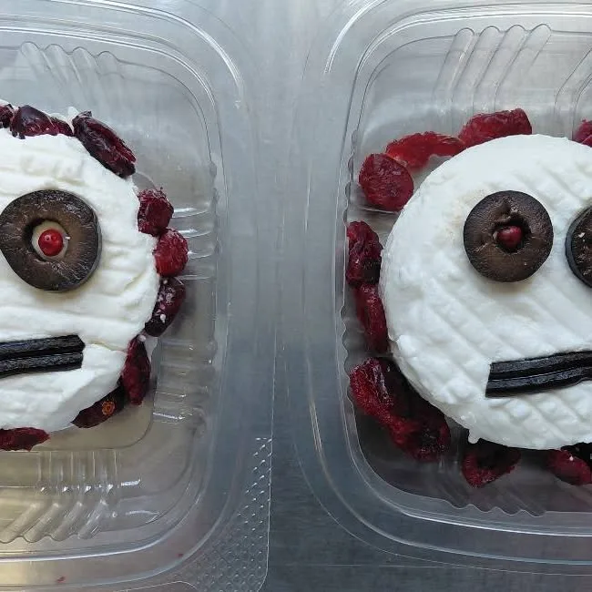

Les douceurs aux fruits
Le lait de chèvre et les fraises, un duo frais et gourmand.
Fromagerie fermière · Tévelave, Les Avirons
Vincent et Muriel élèvent une trentaine de chèvres alpines au Tévelave. Leurs yaourts et fromages de chèvre sont fabriqués sur l'exploitation, avec le lait du jour.


La ferme
Sur les hauteurs des Avirons, chemin de l'Alambic, Vincent et Muriel prennent soin de leurs chèvres alpines et transforment leur lait sur place. Des producteurs fermiers passionnés, qui partagent leur métier avec le sourire.
Nos gourmandises
Des yaourts et fromages de chèvre, nature ou joliment décorés : chaque création donne envie de passer à table.

Le lait de chèvre et les fraises, un duo frais et gourmand.

Des petits pots rigolos qui font craquer les enfants… et les grands.

Pour les beaux moments à partager en famille ou entre amis.
Visites sur réservation
La ferme ouvre ses portes lors de visites avec dégustation. Les places partent vite : ici, chacun pourra réserver la prochaine date en un clic.
Une commande, une visite, une question sur nos fromages ? Un message suffit.